Papers Program
Over the past three decades, the ACM SIGGRAPH Symposium on Interactive 3D Graphics and Games has showcased exceptional progress from academic and industrial research covering all aspects of interactive computer graphics.
This year, we continue a track record of excellence with 16 high-quality papers selected by the international paper committee for publication and presentation at the conference. Paper presentations will be streamed daily on the I3D YouTube channel during the conference. Almost all presentations will be archived and available afterwards. All papers will be presented one after the other in each session, followed by moderated Q & A for all of them.
Conference papers will appear in PACM CGIT after the conference. We have requested authors to provide preprint links as possible until then. Refresh this page periodically, or use a web page monitoring tool, to check this page for updates.
Invited papers
The program also includes 8 papers originally published in the Journal of Computer Graphics Techniques (JCGT) and 4 papers from the IEEE Transactions on Visualization and Computer Graphics (TVCG).
Papers 1: Real-Time Rendering
Session chair: Marco Salvi (opening, Q&A)
- Real-Time Ray-Traced Soft Shadows of Environmental Lighting by Conical Ray Culling
- Yang Xu, Yuanfa Jiang, Junbo Zhang, Kang Li and Guohua Geng
- link, preprint, presentation
-
Abstract
It is difficult to render soft shadows of environmental lighting in real-time because evaluating the visibility function is challenging in animated scenes. We present a method to render soft shadows of environmental lighting at real-time frame rates by hardware accelerated ray tracing and conical ray culling in this work. We assume that the scene contains both static and dynamic objects. The incident irradiance occluded by the dynamic objects is obtained by accumulating the occluded incident radiances over the hemisphere using ray tracing. Conical ray culling is proposed to exclude the rays outside the circular cones defined by the surface point and the bounding spheres of the dynamic objects, which significantly improves the efficiency. The composite incident irradiance is obtained by subtracting the incident irradiance occluded by the dynamic objects from the unshadowed incident irradiance. Rendering results are provided to demonstrate that our proposed method can achieve real-time rendering of soft shadows of environmental lighting in dynamic scenes.

- Stereo-consistent screen space ambient occlusion
- Peiteng Shi, Markus Billeter and Elmar Eisemann
- link, preprint, presentation
-
Abstract
Screen-space ambient occlusion (SSAO) shows high efficiency and is widely used in real-time 3D applications. However, using SSAO algorithms in stereo rendering can lead to inconsistencies due to the differences in the screen-space information captured by the left and right eye. This will affect the perception of the scene and may be a source of viewer discomfort. In this paper, we show that the raw obscurance estimation part and subsequent filtering are both sources of inconsistencies. We developed a screen-space method involving both views in conjunction, leading to a stereo-aware raw obscurance estimation method and a stereo-aware bilateral filter. The results show that our method reduces stereo inconsistencies to a level comparable to geometry-based AO solutions, while maintaining the performance benefits of a screen space approach.
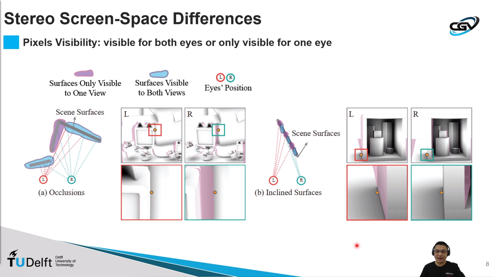
- Scaling Probe-Based Real-Time Dynamic Global Illumination for Production
- Alexander Majercik, Adam Marrs, Josef Spjut and Morgan McGuire
- (invited JCGT paper presentation) link, presentation
-
Abstract
We contribute several practical extensions to the probe-based irradiance-field-with-visibility representation [Majercik et al. 2019] [McGuire et al. 2017] to improve image quality, constant and asymptotic performance, memory efficiency, and artist control. We developed these extensions in the process of incorporating the previous work into the global illumination solutions of the NVIDIA RTXGI SDK, the Unity and Unreal Engine 4 game engines, and proprietary engines for several commercial games. These extensions include: an intuitive tuning parameter (the \"self-shadow\" bias); heuristics to speed transitions in the global illumination; reuse of irradiance data as prefiltered radiance for recursive glossy reflection; a probe state machine to prune work that will not affect the final image; and multiresolution cascaded volumes for large worlds.
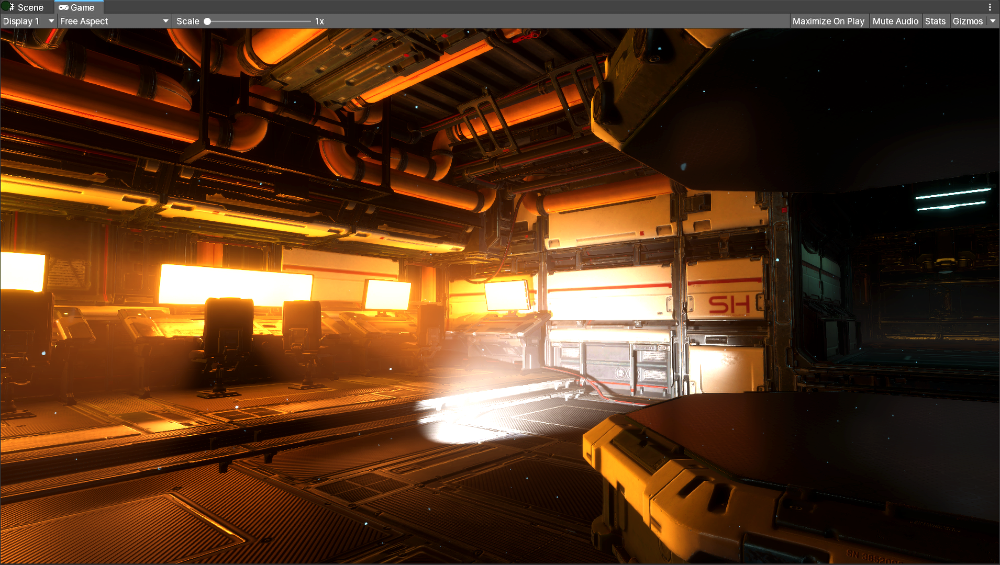
- Collimated Whole Volume Light Scattering in Homogeneous Finite Media
- Zdravko Velinov and Kenny Mitchell
- (invited TVCG paper presentation, live presentation only) link, preprint
-
Abstract
Crepuscular rays form when light encounters an optically thick or opaque medium which masks out portions of the visible scene. Real-time applications commonly estimate this phenomena by connecting paths between light sources and the camera after a single scattering event. We provide a set of algorithms for solving integration and sampling of single-scattered collimated light in a box-shaped medium and show how they extend to multiple scattering and convex media. First, a method for exactly integrating the unoccluded single scattering in rectilinear box-shaped medium is proposed and paired with a ratio estimator and moment-based approximation. Compared to previous methods, it requires only a single sample in unoccluded areas to compute the whole integral solution and provides greater convergence in the rest of the scene. Second, we derive an importance sampling scheme accounting for the entire geometry of the medium. This sampling strategy is then incorporated in an optimized Monte Carlo integration. The resulting integration scheme yields visible noise reduction and it is directly applicable to indoor scene rendering in room-scale interactive experiences. Furthermore, it extends to multiple light sources and achieves superior converge compared to independent sampling with existing algorithms. We validate our techniques against previous methods based on ray marching and distance sampling to prove their superior noise reduction capability.
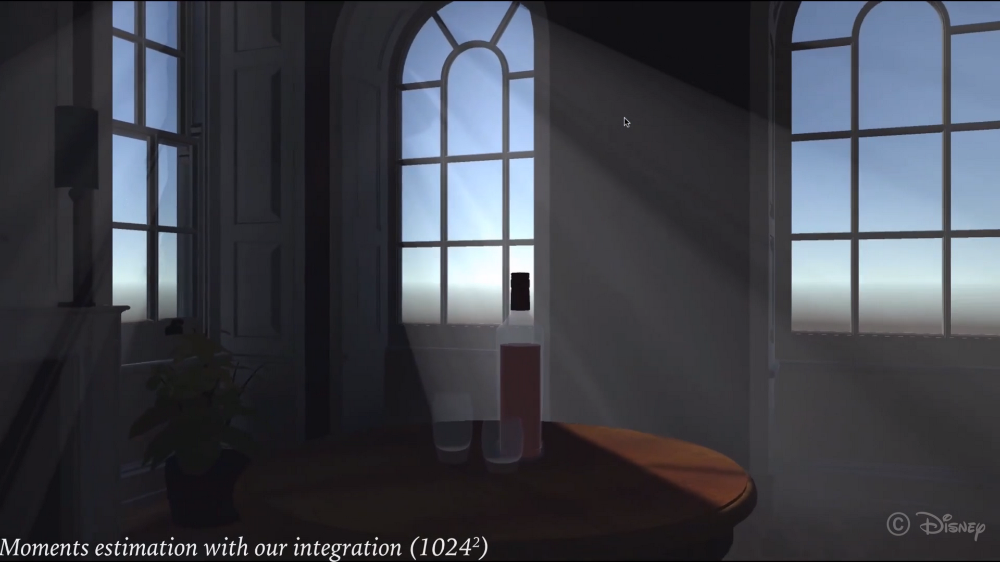
Papers 2: Simulation and Animation
Session chair: Christiaan Gribble (opening, Q&A)
- DCGrid: An Adaptive Grid Structure for Memory-Constrained Fluid Simulation on the GPU
- Wouter Raateland, Torsten Hädrich, Jorge Alejandro Amador Herrera, Daniel Banuti, Wojciech Pałubicki, Sören Pirk, Klaus Hildebrandt and Dominik Michels
- link, preprint, presentation
-
Abstract
We introduce Dynamic Constrained Grid (DCGrid), a hierarchical and adaptive grid structure for fluid simulation combined with a scheme for effectively managing the grid adaptations. DCGrid is designed to be implemented on the GPU and used in high-performance simulations. Specifically, it allows us to efficiently vary and adjust the grid resolution across the spatial domain and to rapidly evaluate local stencils and individual cells in a GPU implementation. A special feature of DCGrid is that the control of the grid adaption is modeled as an optimization under a constraint on the maximum available memory, which addresses the memory limitations in GPU-based simulation. To further advance the use of DCGrid in high-performance simulations, we complement DCGrid with an efficient scheme for approximating collisions between fluids and static solids on cells with different resolutions. We demonstrate the effectiveness of DCGrid for smoke flows and complex cloud simulations in which terrain-atmosphere interaction requires working with cells of varying resolution and rapidly changing conditions. Finally, we compare the performance of DCGrid to that of alternative adaptive grid structures.
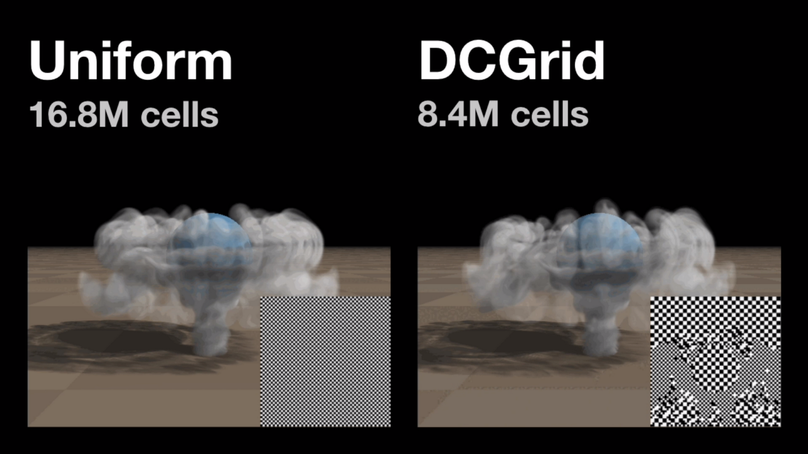
- Interactive simulation of plume and pyroclastic volcanic ejections
- Maud Lastic, Damien Rohmer, Guillaume Cordonnier, Claude Jaupart, Fabrice Neyret and Marie-Paule Cani
- link, preprint, presentation
-
Abstract
We propose an interactive animation method for the ejection of gas and ashes mixtures in volcano eruption. Our novel, layered solution combines a coarse-grain, physically-based simulation of the ejection dynamics with a consistent, procedural animation of multi-resolution details. We show that this layered model can be used to capture the two main types of ejection, namely ascending plume columns composed of rapidly rising gas carrying ash which progressively entrains more air, and pyroclastic flows which de- scend the slopes of the volcano depositing ash, ultimately leading to smaller plumes along their way. We validate the large-scale consis- tency of our model through comparison with geoscience data, and discuss both real-time visualization and off-line, realistic rendering.
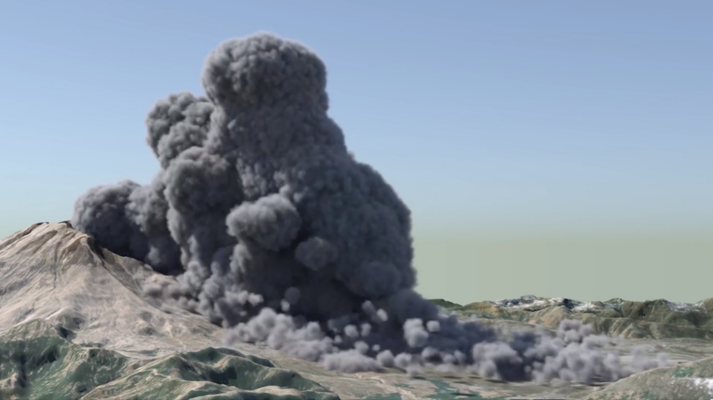
- Permutation Coding for Vertex-Blend Attribute Compression
- Christoph Peters, Bastian Kuth and Quirin Meyer
- link, preprint, presentation
-
Abstract
Compression of vertex attributes is crucial to keep bandwidth requirements in real-time rendering low. We present a method that encodes any given number of blend attributes for skinning at a fixed bit rate while keeping the worst-case error small. Our method exploits that the blend weights are sorted. With this knowledge, no information is lost when the weights get shuffled. Our permutation coding thus encodes additional data, e.g. about bone indices, into the order of the weights. We also transform the weights linearly to ensure full coverage of the representable domain. Through a thorough error analysis, we arrive at a nearly optimal quantization scheme. Our method is fast enough to decode blend attributes in a vertex shader and also to encode them at runtime, e.g. in a compute shader. Our open source implementation supports up to 13 weights in up to 64 bits.
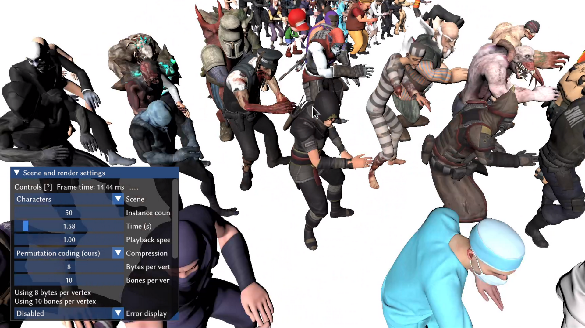
- Real-Time Style Modelling of Human Locomotion via Feature-Wise Transformations and Local Motion Phases
- Ian Mason, Sebastian Starke and Taku Komura
- link, preprint, presentation
-
Abstract
Controlling the manner in which a character moves in a real-time animation system is a challenging task with useful applications. Existing style transfer systems require access to a reference content motion clip, however, in real-time systems the future motion con- tent is unknown and liable to change with user input. In this work we present a style modelling system that uses an animation synthe- sis network to model motion content based on local motion phases. An additional style modulation network uses feature-wise trans- formations to modulate style in real-time. To evaluate our method, we create and release a new style modelling dataset, 100style, con- taining over 4 million frames of stylised locomotion data in 100 different styles that present a number of challenges for existing sys- tems. To model these styles, we extend the local phase calculation with a contact-free formulation. In comparison to other methods for real-time style modelling, we show our system is more robust and efficient in its style representation while improving motion quality.
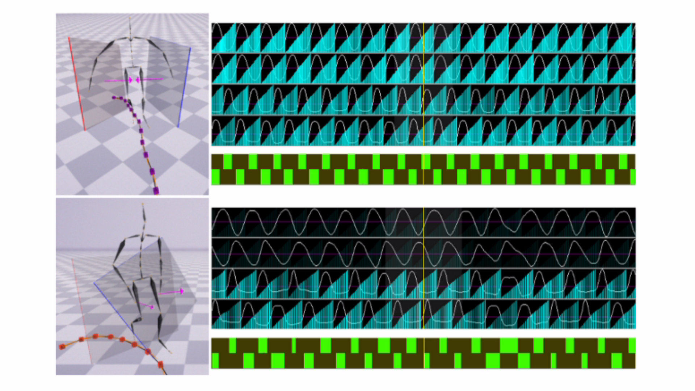
Papers 3: Games and VR
Session chair: Qi Sun (opening, Q&A)
- Effect of Render Resolution on Gameplay Experience, Performance, and Simulator Sickness in Virtual Reality Games
- Jialin Wang, Rongkai Shi, Zehui Xiao, Xueying Qin and Hai-Ning Liang
- link, preprint, presentation
-
Abstract
Higher resolution is one of the main directions and drivers in the development of virtual reality (VR) head-mounted displays (HMDs). However, given its associated higher cost, it is important to determine the benefits of having higher resolution on user experience. For non-VR games, higher resolution is often thought to lead to a better experience, but it is unexplored in VR games. This research aims to investigate the resolution tradeoff in gameplay experience, performance, and simulator sickness (SS) for VR games, particularly first-person shooter (FPS) games. To this end, we designed an experiment to collect gameplay experience, SS, and player performance data with a popular VR FPS game, Half-Life: Alyx. Our results indicate that 2K resolution is an important threshold for an enhanced gameplay experience without affecting performance and increasing SS levels. Moreover, the resolution from 1K to 4K has no significant difference in player performance. Our results can inform game developers and players in determining the type of HMD they want to use to balance the tradeoff between costs and benefits and achieve a more optimal experience.
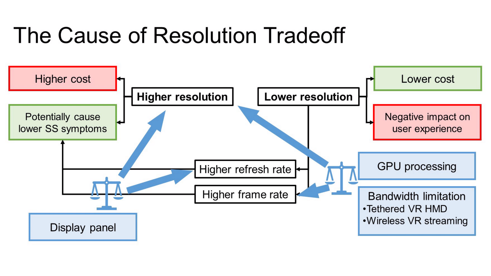
- Investigating the Performance of Various Deep Neural Networks-based Approaches Designed to Identify Game Events in Gameplay Footage
- Matheus Prado Prandini Faria, Etienne Julia, Marcelo Zanchetta Do Nascimento and Rita M. S. Julia
- link, preprint, presentation
-
Abstract
Video games, in addition to representing an extremely relevant field of entertainment and market, have been widely used as a case study in artificial intelligence for representing a problem with a high de- gree of complexity. In such studies, the investigation of approaches that endow player agents with the ability to retrieve relevant in- formation from game scenes stands out, since such information can be very useful to improve their learning ability. This work pro- poses and analyses new deep learning-based models to identify game events occurring in Super Mario Bros gameplay footage. The architecture of each model is composed of a feature extractor convo- lutional neural network (CNN) and a classifier neural network (NN). The extracting CNN aims to produce a feature-based representation for game scenes and submit it to the classifier, so that the latter can identify the game event present in each scene. The models differ from each other according to the following elements: the type of the CNN; the type of the NN classifier; and the type of the game scene representation at the CNN input, being either single frames, or chunks, which are n-sequential frames (in this paper 6 frames were used per chunk) grouped into a single input. The main con- tribution of this article is to demonstrate the greater performance reached by the models which combines the chunk representation for the game scenes with the resources of the classifier recurrent neural networks (RNN).
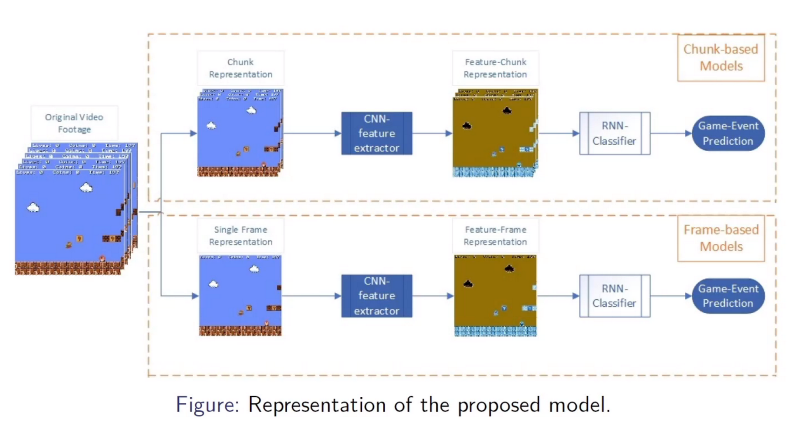
- Interactive Physics-Based Virtual Sculpting with Haptic Feedback
- Avirup Mandal, Parag Chaudhuri and Subhasis Chaudhuri
- link, preprint, presentation
-
Abstract
Sculpting is an art form that relies on both the visual and tactile senses. A faithful simulation of sculpting, therefore, requires interactive, physically accurate haptic and visual feedback. We present an interactive physics-based sculpting framework with faithful haptic feedback. We enable cutting of the material by designing a stable, remeshing-free cutting algorithm called Improved stable eXtended Finite Element Method. We present a simulation framework to enable stable visual and haptic feedback at interactive rates. We evaluate the performance of our framework quantitatively and quantitatively through an extensive user study.
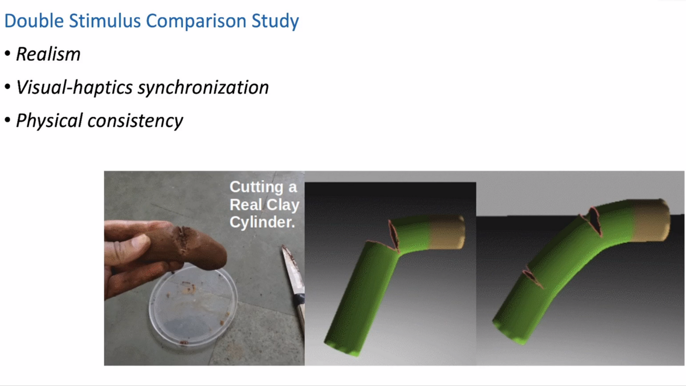
- EasyVRModeling: Easily Create 3D Models by an Immersive VR System
- Zhiying Fu, Rui Xu, Shiqing Xin, Shuangmin Chen, Changhe Tu, Chenglei Yang and Lin Lu
- link, preprint, presentation
-
Abstract
The latest innovations of VR make it possible to construct 3D models in a holographic immersive simulation environment. In this paper, we develop a user-friendly mid-air interactive modeling system named EasyVRModeling. We first prepare a dataset consisting of diverse components and precompute the discrete signed distance function (SDF) for each component. During the modeling phase, users can freely design complicated shapes with a pair of VR controllers. Based on the discrete SDF representation, any CSG-like operation (union, intersect, subtract) can be performed voxel-wise. Throughout the modeling process, we maintain one single dynamic SDF for the whole scene so that the zero-level set surface of the SDF exactly encodes the up-to-date constructed shape. Both SDF fusion and surface extraction are implemented via GPU to allow for smooth user experience. We asked 34 volunteers to create their favorite models using EasyVRModeling. With a simple training process for several minutes, most of them can create a fascinating shape or even a descriptive scene very quickly.
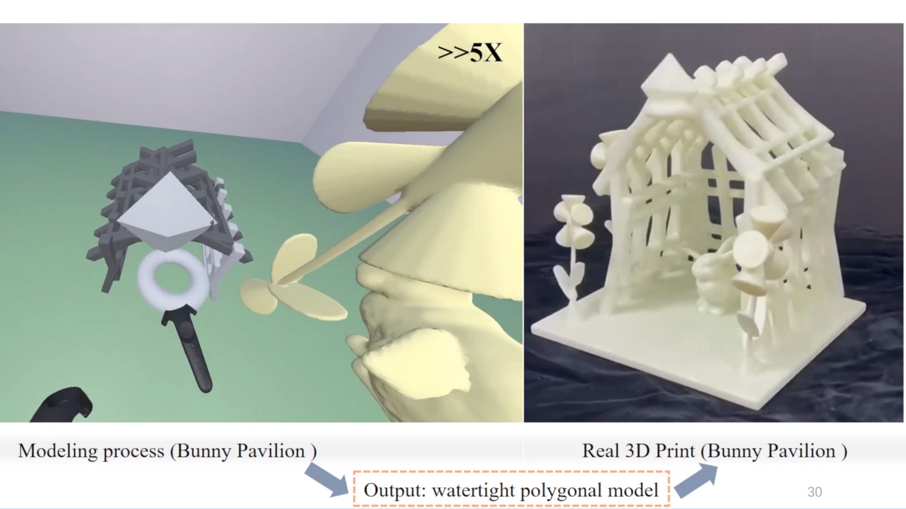
Papers 4: Geometry
Session chair: Markus Billeter (opening, Q&A)
- A Dataset and Explorer for 3D Signed Distance Functions
- Towaki Takikawa, Andrew Glassner and Morgan McGuire
- (invited JCGT paper presentation) link, presentation
-
Abstract
Reference datasets are a key tool in the creation of new algorithms. They allow us to compare different existing solutions and identify problems and weaknesses during the development of new algorithms. The signed distance function (SDF) is enjoying a renewed focus of research activity in computer graphics, but until now there has been no standard reference dataset of such functions. We present a database of 63 curated, optimized, and regularized functions of varying complexity. Our functions are provided as analytic expressions that can be efficiently evaluated on a GPU at any point in space. We also present a viewing and inspection tool and software for producing SDF samples appropriate for both traditional graphics and training neural networks.
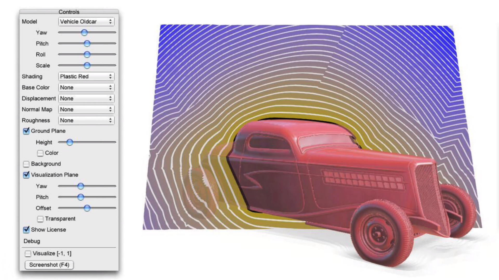
- Improved Accuracy for Prism-Based Motion Blur
- Mads Rønnow, Ulf Assarsson, Erik Sintorn and Marco Fratarcangeli
- (invited JCGT paper presentation) link, presentation
-
Abstract
For motion blur of dynamic triangulated objects, it is common to construct a prism-like shape for each triangle, from the linear trajectories of its three edges and the triangle’s start and end position during the delta time step. Such a prism can be intersected with a primary ray to find the time points where the triangle starts and stops covering the pixel center. These intersections are paired into time intervals for the triangle and pixel. Then, all time intervals, potentially from many prisms, are used to aggregate a motion-blurred color contribution to the pixel.
For real-time rendering purposes, it is common to linearly interpolate the ray-triangle intersection and uv coordinates over the time interval. This approximation often works well, but the true path in 3D and uv space for the ray-triangle intersection, as a function of time, is in general nonlinear.
In this article, we start by noting that the path of the intersection point can even partially reside outside of the prism volume itself: i.e., the prism volume is not always identical to the volume swept by the triangle. Hence, we must first show that the prisms still work as bounding volumes when finding the time intervals with primary rays, as that may be less obvious when the volumes differ. Second, we show a simple and potentially common class of cases where this happens, such as when a triangle undergoes a wobbling- or swinging-like motion during a time step. Third, when the volumes differ, linear interpolation between two points on the prism surfaces for triangle properties works particularly poorly, which leads to visual artifacts. Therefore, we finally modify a prism-based real-time motion-blur algorithm to use adaptive sampling along the correct paths regarding the triangle location and uv coordinates over which we want to compute a filtered color. Due to being adaptive, the algorithm has a negligible performance penalty on pixels where linear interpolation is sufficient, while being able to significantly improve the visual quality where needed, for a very small additional cost.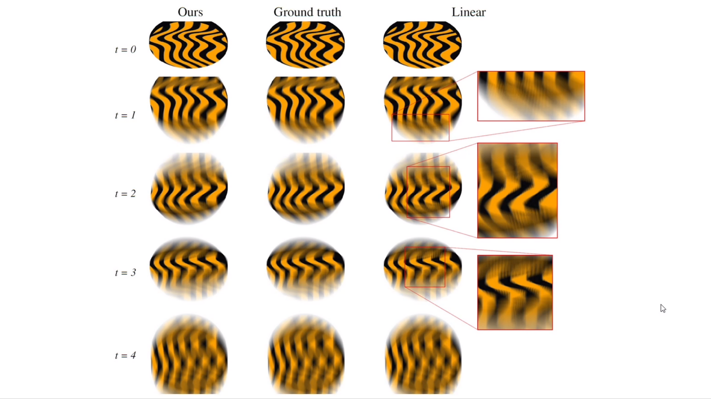
- SurfaceNets for Multi-Label Segmentations with Preservation of Sharp Boundaries
- and Sarah Frisken
- (invited JCGT paper presentation) link, presentation
-
Abstract
We extend 3D SurfaceNets to generate surfaces of segmented 3D medical images composed of multiple materials represented as indexed labels. Our extension generates smooth, high-quality triangle meshes suitable for rendering and tetrahedralization, preserves topology and sharp boundaries between materials, guarantees a user-specified accuracy, and is fast enough that users can interactively explore the trade-off between accuracy and surface smoothness. We provide open-source code in the form of an extendable C++ library with a simple API, and a Qt and OpenGL-based application that allows users to import or randomly generate multi-label volumes to experiment with surface fairing parameters. In this paper, we describe the basic SurfaceNets algorithm, our extension to handle multiple materials, our method for preserving sharp boundaries between materials, and implementation details used to achieve efficient processing.
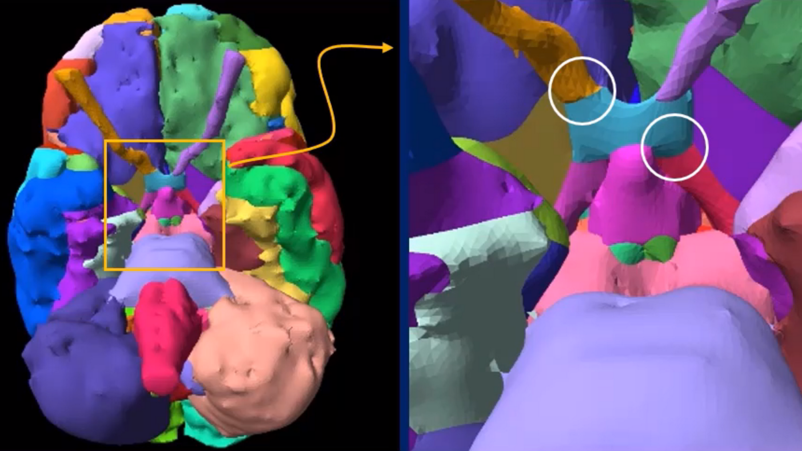
Papers 5: Image-Based Algorithms
Session chair: Leonardo Scandolo (opening, Q&A)
- Training and Predicting Visual Error for Real-Time Applications
- João Cardoso, Bernhard Kerbl, Lei Yang, Yury Uralsky and Michael Wimmer
- link, preprint, presentation
-
Abstract
Visual error metrics play a fundamental role in the quantification of perceived image similarity. Most recently, use cases for them in real-time applications have emerged, such as content-adaptive shading and shading reuse to increase performance and improve efficiency. A wide range of different metrics has been established, with the most sophisticated being capable of capturing the perceptual characteristics of the human visual system. However, their complexity, computational expense, and reliance on reference images to compare against prevent their generalized use in real-time, restricting such applications to using only the simplest available metrics. In this work, we explore the abilities of convolutional neural networks to predict a variety of visual metrics without requiring either reference or rendered images. Specifically, we train and deploy a neural network to estimate the visual error resulting from reusing shading or using reduced shading rates. The resulting models account for 70%-90% of the variance while achieving up to an order of magnitude faster computation times. Our solution combines image-space information that is readily available in most state-of-the-art deferred shading pipelines with reprojection from previous frames to enable an adequate estimate of visual errors, even in previously unseen regions. We describe a suitable convolutional network architecture and considerations for data preparation for training. We demonstrate the capability of our network to predict complex error metrics at interactive rates in a real-time application that implements content-adaptive shading in a deferred pipeline. Depending on the portion of unseen image regions, our approach can achieve up to 2× performance compared to state-of-the-art methods.

- Fast temporal reprojection without motion vectors
- Johannes Hanika, Lorenzo Tessari and Carsten Dachsbacher
- (invited JCGT paper presentation) link, presentation
-
Abstract
Rendering realistic graphics often depends on random sampling, increasingly so even for real-time settings. When rendering animations, there is often a surprising amount of information that can be reused between frames.
This is exploited in numerous rendering algorithms, offline and real-time, by relying on reprojecting samples, for denoising as a post-process or for more time-critical applications such as temporal antialiasing for interactive preview or real-time rendering. Motion vectors are widely used during reprojection to align adjacent frames’ warping based on the input geometry vectors between two time samples. Unfortunately, this is not always possible, as not every pixel may have coherent motion, such as when a glass surface moves: the highlight moves in a different direction than the surface or the object behind the surface. Estimation of true motion vectors is thus only possible for special cases. We devise a fast algorithm to compute dense correspondences in image space to generalize reprojection-based algorithms to scenarios where analytical motion vectors are unavailable and high performance is required. Our key ingredient is an efficient embedding of patch-based correspondence detection into a hierarchical algorithm. We demonstrate the effectiveness and utility of the proposed reprojection technique for three applications: temporal antialiasing, handheld burst photography, and Monte Carlo rendering of animations.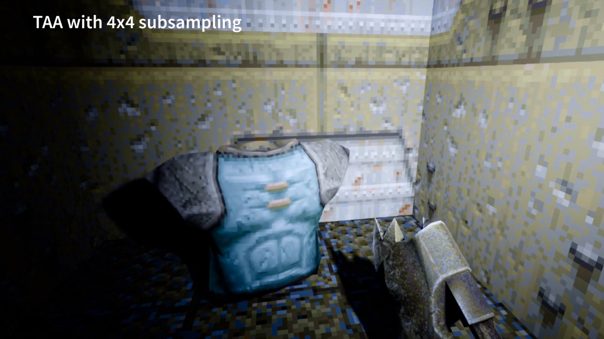
- An OpenEXR Layout for Spectral Images
- Alban Fichet, Romain Pacanowski and Alexander Wilkie
- (invited JCGT paper presentation) link, presentation
-
Abstract
We propose a standardized layout to organize spectral data stored in OpenEXR images. We motivate why we chose the OpenEXR format as the basis for our work, and we explain our choices with regard to data selection and organization: our goal is to define a standard for the exchange of measured or simulated spectral and bi-spectral data. We also provide sample code to store spectral images in OpenEXR format.
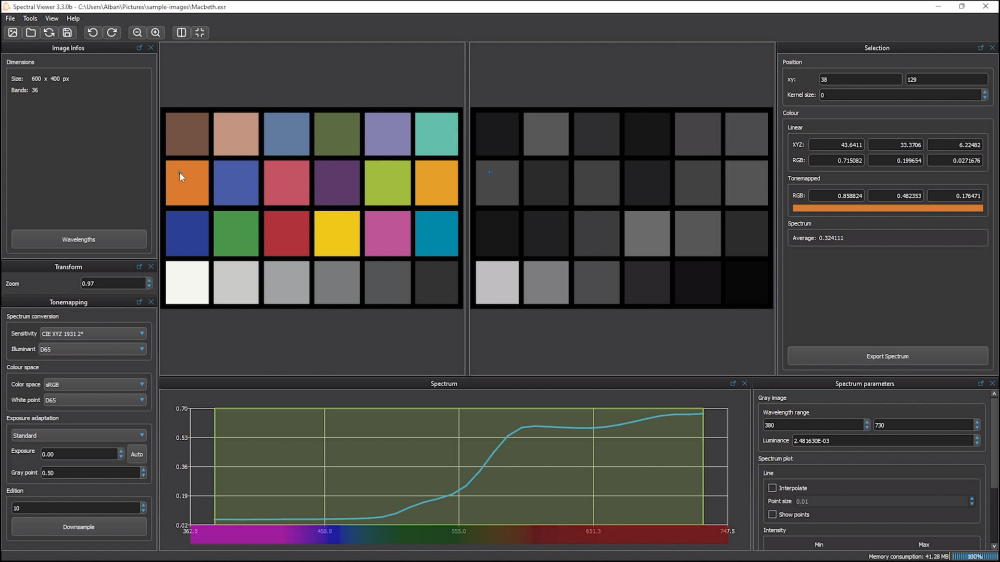
- MMPX Style-Preserving Pixel Art Magnification
- Morgan McGuire and Mara Gagiu
- (invited JCGT paper presentation) link, presentation
-
Abstract
We present MMPX, an efficient filter for magnifying pixel art, such as 8- and 16-bit era video-game sprites, fonts, and screen images, by a factor of two in each dimension. MMPX preserves art style, attempting to predict what the artist would have produced if working at a larger scale but within the same technical constraints.
Pixel-art magnification enables the displaying of classic games and new retro-styled ones on modern screens at runtime, provides high-quality scaling and rotation of sprites and raster-font glyphs through precomputation at load time, and accelerates content-creation workflow.
MMPX reconstructs curves, diagonal lines, and sharp corners while preserving the exact palette, transparency, and single-pixel features. For general pixel art, it can often preserve more aspects of the original art style than previous magnification filters such as nearest-neighbor, bilinear, HQX, XBR, and EPX. In specific cases and applications, other filters will be better. We recommend EPX and base XBR for content with exclusively rounded corners, and HQX and antialiased XBR for content with large palettes, gradients, and antialiasing. MMPX is fast enough on embedded systems to process typical retro 64k-pixel full screens in less than 0.5 ms on a GPU or CPU. We include open source implementations in C++, JavaScript, and OpenGL ES GLSL for our method and several others.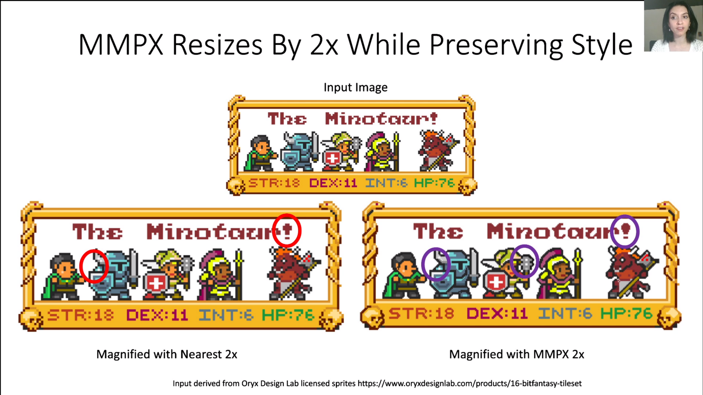
Papers 6: Appearance and Shading
Session chair: Adrien Gruson (opening, Q&A)
- Bringing Linearly Transformed Cosines to Anisotropic GGX
- Aakash Kt, Eric Heitz, Jonathan Dupuy and Narayanan P. J.
- link, preprint, presentation
-
Abstract
Linearly Transformed Cosines (LTCs) are a family of distributions that are used for real-time area-light shading thanks to their analytic integration properties. Modern game engines use an LTC approximation of the ubiquitous GGX model, but currently this approximation only exists for isotropic GGX and thus anisotropic GGX is not supported. While the higher dimensionality presents a challenge in itself, we show that several additional problems arise when fitting, post-processing, storing, and interpolating LTCs in the anisotropic case. Each of these operations must be done carefully to avoid rendering artifacts. We find robust solutions for each operation by introducing and exploiting invariance properties of LTCs. As a result, we obtain a small 8⁴ look-up table that provides a plausible and artifact-free LTC approximation to anisotropic GGX and brings it to real-time area-light shading.
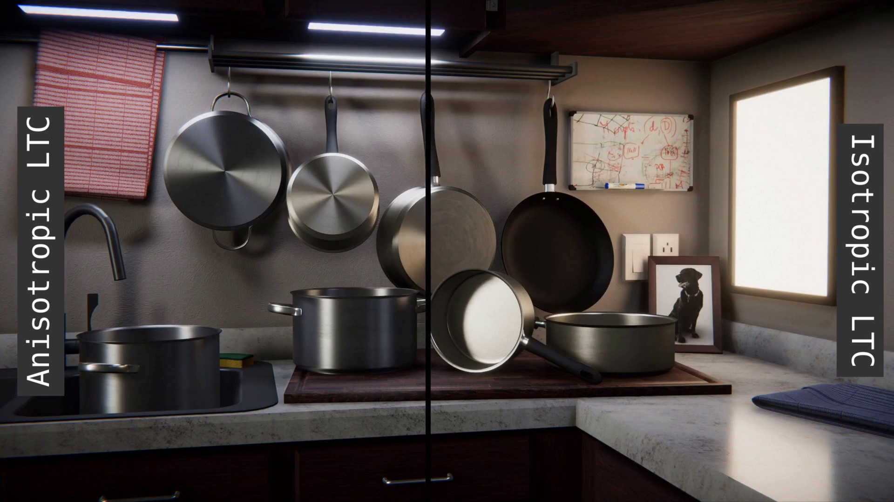
- Rendering Layered Materials with Diffuse Interfaces
- Heloise Dupont de Dinechin and Laurent Belcour
- link, preprint, presentation
-
Abstract
In this work, we introduce a novel method to render, in real-time, Lambertian surfaces with a rough dieletric coating. We show that the appearance of such configurations is faithfully represented with two microfacet lobes accounting for direct and indirect interactions respectively. We numerically fit these lobes based on the first order directional statistics (energy, mean and variance) of light transport using 5D tables and narrow them down to 2D + 1D with analytical forms and dimension reduction. We demonstrate the quality of our method by efficiently rendering rough plastics and ceramics, closely matching ground truth. In addition, we improve a state-of-the-art layered material model to include Lambertian interfaces.
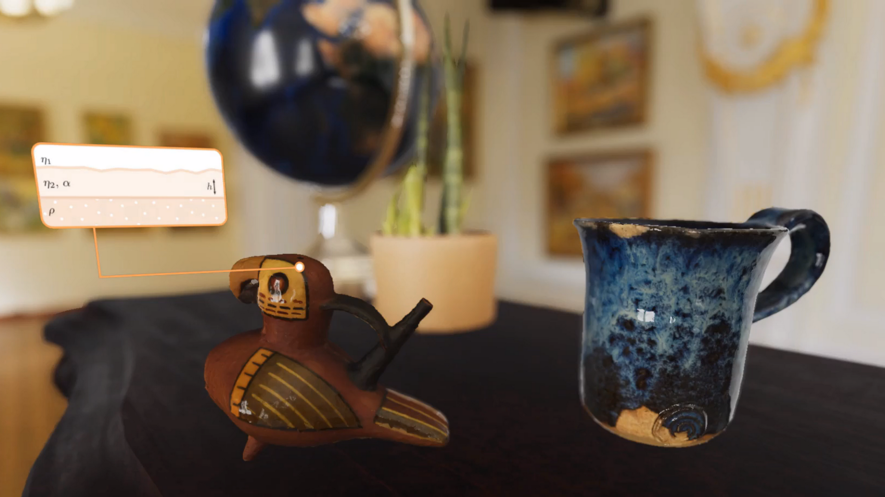
- Real-time Shading with Free-form Planar Area Lights using Linearly Transformed Cosines
- Takahiro Kuge, Tatsuya Yatagawa and Shigeo Morishima
- (invited JCGT paper presentation) link, presentation
-
Abstract
This article introduces a simple yet powerful approach to illuminating scenes with free-form planar area lights in real time. For this purpose, we extend a previous method for polygonal area lights in two ways. First, we adaptively approximate the closed boundary curve of the light, by extending the Ramer–Douglas–Peucker algorithm to consider the importance of a given subdivision step to the final shading result. Second, we efficiently clip the light to the upper hemisphere, by algebraically solving a polynomial equation per curve segment. Owing to these contributions, our method is efficient for various light shapes defined by cubic Bézier curves and achieves a significant performance improvement over the previous method applied to a uniformly discretized boundary curve.
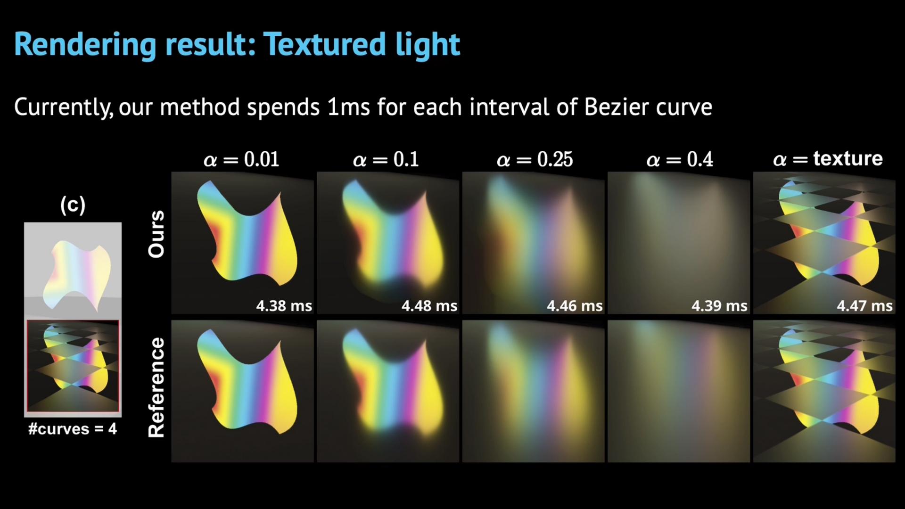
- Neural Photometry-guided Visual Attribute Transfer
- Carlos Rodriguez-Pardo and Elena Garces
- (invited TVCG paper presentation) link, preprint, presentation
-
Abstract
We present a deep learning-based method for propagating spatially-varying visual material attributes (e.g. texture maps or image stylizations) to larger samples of the same or similar materials. For training, we leverage images of the material taken under multiple illuminations and a dedicated data augmentation policy, making the transfer robust to novel illumination conditions and affine deformations. Our model relies on a supervised image-to-image translation framework and is agnostic to the transferred domain; we showcase a semantic segmentation, a normal map, and a stylization. Following an image analogies approach, the method only requires the training data to contain the same visual structures as the input guidance. Our approach works at interactive rates, making it suitable for material edit applications. We thoroughly evaluate our learning methodology in a controlled setup providing quantitative measures of performance. Last, we demonstrate that training the model on a single material is enough to generalize to materials of the same type without the need for massive datasets.
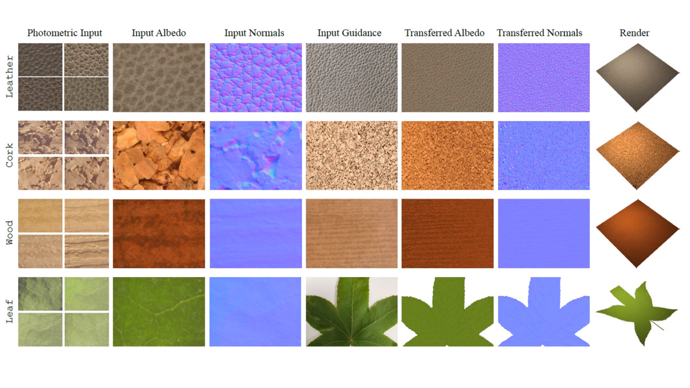
Papers 7: Virtual Humans
Session chair: Michal Iwanicki (opening, Q&A)
- Real-Time Relighting of Human Faces with a Low-Cost Setup
- Nejc Maček, Baran Usta, Elmar Eisemann and Ricardo Marroquim
- link, preprint, presentation
-
Abstract
Video-streaming services usually feature post-processing effects to replace the background. However, these often yield inconsistent lighting. Machine-learning-based relighting methods can address this problem, but, at real-time rates, are restricted to a low resolu- tion and can result in an unrealistic skin appearance. Physically- based rendering techniques require complex skin models that can only be acquired using specialised equipment. Our method is light- weight and uses only a standard smartphone. By correcting imper- fections during capture, we extract a convincing physically-based skin model. In combination with suitable acceleration techniques, we achieve real-time rates on commodity hardware.
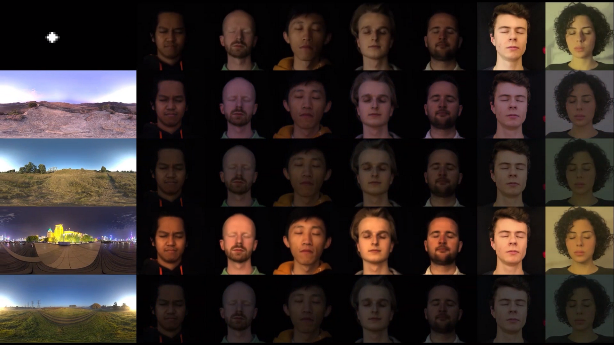
- Real-Time Hair Filtering with Convolutional Neural Networks
- Roc R. Currius, Erik Sintorn and Ulf Assarsson
- link, preprint, presentation
-
Abstract
Rendering of realistic-looking hair is in general still too costly to do in real-time applications, from simulating the physics to rendering the fine details required for it to look natural, including self-shadowing.
We show how an autoencoder network, that can be evaluated in real time, can be trained to filter an image of few stochastic samples, including self-shadowing, to produce a much more detailed image that takes into account real hair thickness and transparency.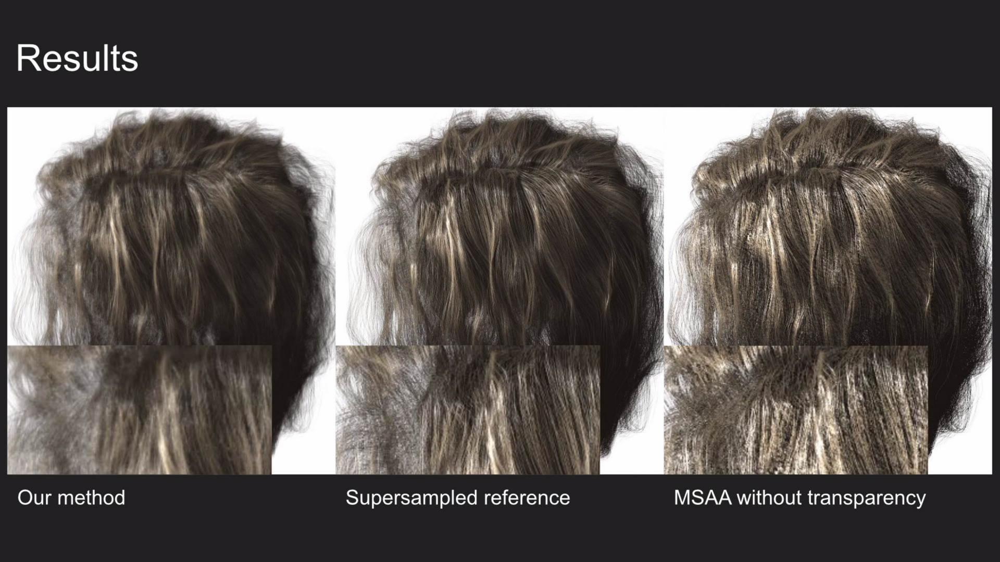
- Joint Audio-Text Model for Expressive Speech-Driven 3D Facial Animation
- Yingruo Fan, Zhaojiang Lin, Jun Saito, Wenping Wang and Taku Komura
- link, preprint, presentation
-
Abstract
Speech-driven 3D facial animation with accurate lip synchronization has been widely studied. However, synthesizing realistic motions for the entire face during speech has rarely been explored. In this work, we present a joint audio-text model to capture the contextual information for expressive speech-driven 3D facial animation. The existing datasets are collected to cover as many different phonemes as possible instead of sentences, thus limiting the capability of the audio-based model to learn more diverse contexts. To address this, we propose to leverage the contextual text embeddings extracted from the powerful pre-trained language model that has learned rich contextual representations from large-scale text data. Our hypothesis is that the text features can disambiguate the variations in upper face expressions, which are not strongly correlated with the audio. In contrast to prior approaches which learn phoneme-level features from the text, we investigate the high-level contextual text features for speech-driven 3D facial animation. We show that the combined acoustic and textual modalities can synthesize realistic facial expressions while maintaining audio-lip synchronization. We conduct the quantitative and qualitative evaluations as well as the perceptual user study. The results demonstrate the superior performance of our model against existing state-of-the-art approaches.
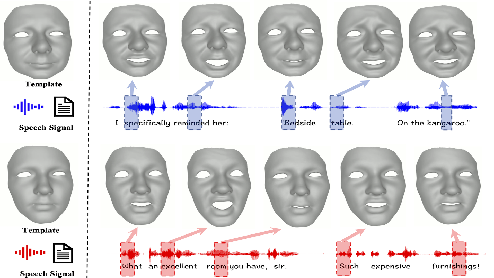
- Cross-Domain and Disentangled Face Manipulation With 3D Guidance
- Can Wang, Menglei Chai, Mingming He, Dongdong Chen and Jing Liao
- (invited TVCG paper presentation) link, preprint, presentation
-
Abstract
Face image manipulation via three-dimensional guidance has been widely applied in various interactive scenarios due to its semantically-meaningful understanding and user-friendly controllability. However, existing 3D-morphable-model-based manipulation methods are not directly applicable to out-of-domain faces, such as non-photorealistic paintings, cartoon portraits, or even animals, mainly due to the formidable difficulties in building the model for each specific face domain. To overcome this challenge, we propose, as far as we know, the first method to manipulate faces in arbitrary domains using human 3DMM. This is achieved through two major steps: 1) disentangled mapping from 3DMM parameters to the latent space embedding of a pre-trained StyleGAN2 that guarantees disentangled and precise controls for each semantic attribute; and 2) cross-domain adaptation that bridges domain discrepancies and makes human 3DMM applicable to out-of-domain faces by enforcing a consistent latent space embedding. Experiments and comparisons demonstrate the superiority of our high-quality semantic manipulation method on a variety of face domains with all major 3D facial attributes controllable pose, expression, shape, albedo, and illumination. Moreover, we develop an intuitive editing interface to support user-friendly control and instant feedback. Our project page is https://cassiepython.github.io/cddfm3d/index.html
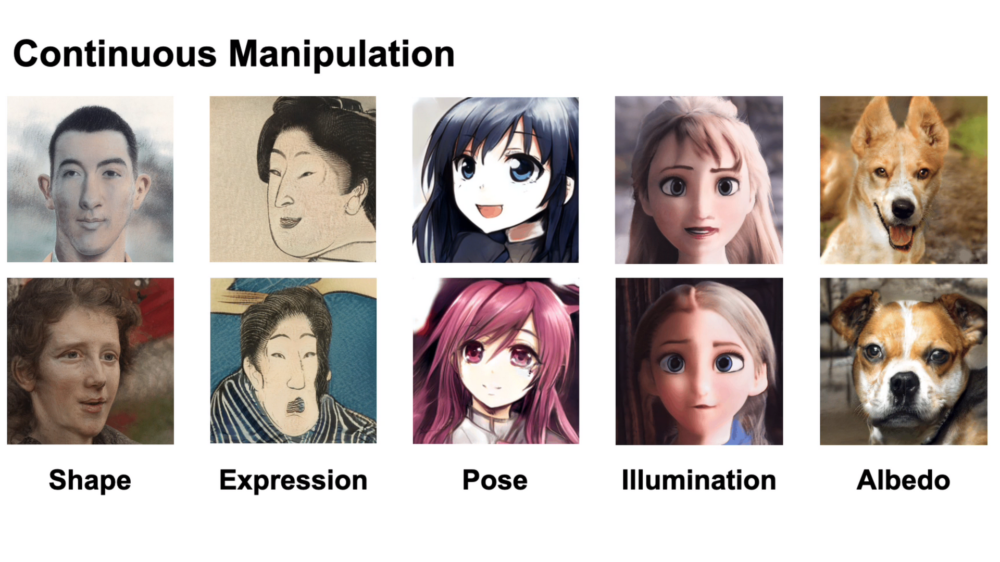